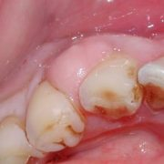

Stomatologie generala
Clinica Healthy Dent abordeaza toate specialitatile stomatologice, oferind un tratament complet si complex folosind materiale si tehnici de ultima generatie.
Consultatia la prima vizita in Clinica Healthy Dent cuprinde:
- completarea foii de observatie prin care informati medicul cu privire la starea de sanatate, atat din punct de vedere dentar cat si general
- examinarea facuta de medic prin care va sunt aduse la cunostinta necesitatile terapeutice. Veti putea vizualiza fiecare problema dentara pe masura ce va este aratata de catre medic cu ajutorul camerei intraorale, pe ecranul LCD al unitului dentar in timpul examinarii.
- intocmirea planului de tratament si informarea dumneavoastra asupra costului estimativ al tratamentului.
Interventii practicate:
- profilaxie dentara: indrumari privind igiena orala, controlul placii bacteriene, detartraj cu ultrasunete si periaj profesional, air-flow, sigilarea santurilor si fosetelor, fluorizari;
- odontoterapie: tratamentul hipersensibilitatii dentare, cariilor si complicatiilor ei, obturatii fizionomice fotopolimerizabile;
- cosmetica dentara: tratamente de albire, fatetari ceramice si de compozit;
- endodontie: tratamentul gangrenelor pulpare, pulpitelor, retratamentul, obturatii radiculare;
- parodontologie: profilaxia afectiunilor gingivale, tratamentul gingivitelor si parodontopatiilor;
- tratamente protetice: proteze mobile, mobilizabile, schelatate, fixe, pe implante, incrustatii;
Albire dentara
Albirea dentara cu Beyond Polus Advance este cel mai modern sistem de albire, ce ofera rezultate exceptionale in doar 45 minute, realizand albirea cu pana la 8 nuante. Acest tratament previne sensibilitaea dentara protejand structura smaltului si tesuturile din jur.
Ortodontie
Ortodontia, prima din specializarile in medicina dentara, se ocupa cu identificarea si rezolvarea cazurilor de malocluzie si deformari dentofaciale (decalaj dintre maxilar si mandibula). In acesta ramura folosirea aparatelor ortodontice si a dispoztivelor ortodontice este esentiala pentru obtinerea rezultatelor dorite de dumneavoastra. La Clinica Aesthetica medicul nostru specialist rezolva aceste cazuri prin aplicarea aparatelor dentare mobile sau brackets (ce pot fi fizionomice sau nu), cu sau fara ajutorul chirurgiei ortognate.
Clinica noastra ofera prin pregatirea si calificarile medicului nostru ortodont, tratamente de calitate si rezultate exceptionale.
Interventii practicate:
- aparate dentare mobile si mobilizabile
- aparate dentare fixe (brackets)
- chirurgie ortognata (cand este cazul)
Endodontie microscopica
De fiecare data cand avem o durere dentara, de cele mai multe ori, endodontia este prima dintre specializarile care ne vine in ajutor. Endodontia microscopica practicata impreuna cu diga este superioara tratamentelor endodontice clasice deoarece microscopul folosit permite medicului sa gaseasca mai repede si sa vada mai clar canalele dentare, tratamentul fiind astfel mai facil si mai sigur pentru pacient.
Interventii practicate:
- extirpare vitala a nervului
- obturare canale radiculare
- tratamente si obturatii la microscop
- tratamente cu instrumentar rotativ
- retratamente endodontice
- eliminiarea corpilor straini din canale
- inchidere perforatii la microscop
- drenaj endodontic
- reconstructii corono radiculare
- tratamente de urgenta
- pansament calmant
Parodontologie
Boala parodontala este cauzata de bacterii, sub forma de placa microbiana sau tartru, ce adera la gingii, os si tesuturile inconjuratoare. Boala este nedurerosa in primele faze, dar consecintele sunt severe daca sunt lasate netratate.
Interventii practicate:
- masurarea indicelui de placa bacteriana
- igenizare profesionala
- gingivectomii
- identificarea si inlaturarea factorilor favorizanti producerii leziunilor
- parodontale
- antibioterapie
- echilibrari ocluzale
- chiuretaje in camp inchis sau deschis
- asocierea tratamentelor ortodontice și/sau implanto-protetice
- imobilizari dentare
- tratamentul retractiilor gingivale
- operatii cu lambou
- tehnici chirurgicale de regenerare tisulara ghidată utilizand cele mai bune materiale de aditie si regenerare
- biostimulare
Chirurgie orala
Interventiile de chirurgie orala se impun in situatiile in care este necesara salvarea dintilor afectati de complicatiile unor afectiuni stomatologice sau in pregatirea terenului in vederea refacerilor protetice.
Interventii practicate:
- extractii dentare
- odontectomii
- amputatii radiculare
- rezectii apicale
- aditii osoase (verticale, laterale, prin sinus lift…)
- regularizari de creasta alveolara
- chiuretaje parodontale
- chistectomii
- lateralizare de nerv alveolar inferior
- incizii ale abceselor
- bone split
Implanturi dentare
Terapia prin implanturi dentare ofera posibilitatea inlocuirii dintilor lipsa fara a mai devitaliza dintii vecini si fara ai slefui, asa cum se procedeaza in cazul aplicarii puntilor dentare. De asemenea, igienizarea in cazul aplicarii de coroane separate este mai eficienta. Pacientii care nu doresc sa poarte proteze mobile pot apela cu incredere la terapia implantara pentru realizarea lucrarilor fixe, acestea aducand un maxim functional estetic si psihologic.
Daca edentatia este totala, implanturile dentare pot sustine o proteza mobila, oferindu-i acesteia o mai buna stabilitate si functionalitate. Implantul dentar este format dintr-un surub ce inlocuieste radacina dintelui lipsa. Acesta are nevoie de un timp de integrare in osul maxilar de minim 3 luni, dupa care este aplicata partea vizibila, coronara.
Terapia pe implanturi va ofera cea mai buna functionalitate si estetica din toate variantele de tratament posibile. Metodele chirurgicale de aplicare a implantelor se adreseaza rezolvarii edentatiilor partiale (absenta unuia sau mai multor dinti) si totale (absenta tuturor dintilor). Pe aceste implante se va efectua protezarea imediata sau intr-o etapa ulterioara.
Interventii practicate:
- implantare
- sinus lift
- aditie osoasa laterala, verticala
- lateralizare de nerv alveolar inferior
- bone split
- augumentari
Chirurgie maxilo-faciala
Interventiile chirurgicale maxilo-faciale se efectueaza pentru tratarea afectiunilor sinusurilor maxilare, supuratiilor de parti moi, afectiunilor tumorale si traumatice ale fetei, anomalii dento maxilare. In cazurile complicate ce necesita internare si asistenta medicala permanenta, aceste proceduri se efectueaza in regim spitalicesc.
Interventii practicate:
- incizii de supuratii ale lojilor fetei
- cure sinusale
- extirpari de tumori
- imobilizari de fracturi ale maxilarelor
Chirurgie estetica
Estetica faciala este cea asigura rejuvenare, vitalitate, intinerire si repara defecte posttraumatice sau aparute cu varsta, fiind cea mai buna arma antiaging. Clinica Aesthetica are cei mai buni specialist chirurgi, astfel, fie ca e vorba de injectii cu botox sau acid hyaluronic, fire resorbabile PDO, mereu vei avea satisfactie deplina. In timp tenul se degradeaza, ducand la modificarea elasticitatii si la aparitia ridurilor. Inceperea interventiilor de estetica faciala este recomandata profilactic inaintea inceperii aparitiiei fenomenelor vizibile de imbatranire.
Interventii practicate:
- fire resorbabile PDO
- tratamentul ridurilor cu acid hyaluronic al ridurilor
- tratamentul cu botox al ridurilor
Curiozități despre dinți care te vor face să îi privești altfel

- Dentiția temporară se formează înainte de naștere şi apare în jurul vârstei de 6 luni. Totuşi, 1 din 2.000 de copii se nasc cu dinţii erupţi.
- De ce apar cariile? Ne spune istoria. Copiii din era preistorică dezvoltau carii foarte rar, pentru că zahărul era inexistent în regimul lor.
- Cea mai puternică substanţă din corpul nostru este smalţul. Este chiar mai rezistent decât oasele.
- Dacă eşti dreptaci, vei tinde să mesteci mâncarea pe partea dreaptă. Stângacii vor mesteca mai mult pe partea stângă a cavităţii bucale. Cei ambidextri nu au preferinţe.
- Dacă folosim aţa dentară în fiecare zi, într-o viaţă întreagă consumăm peste 8 km de aţă dentară.